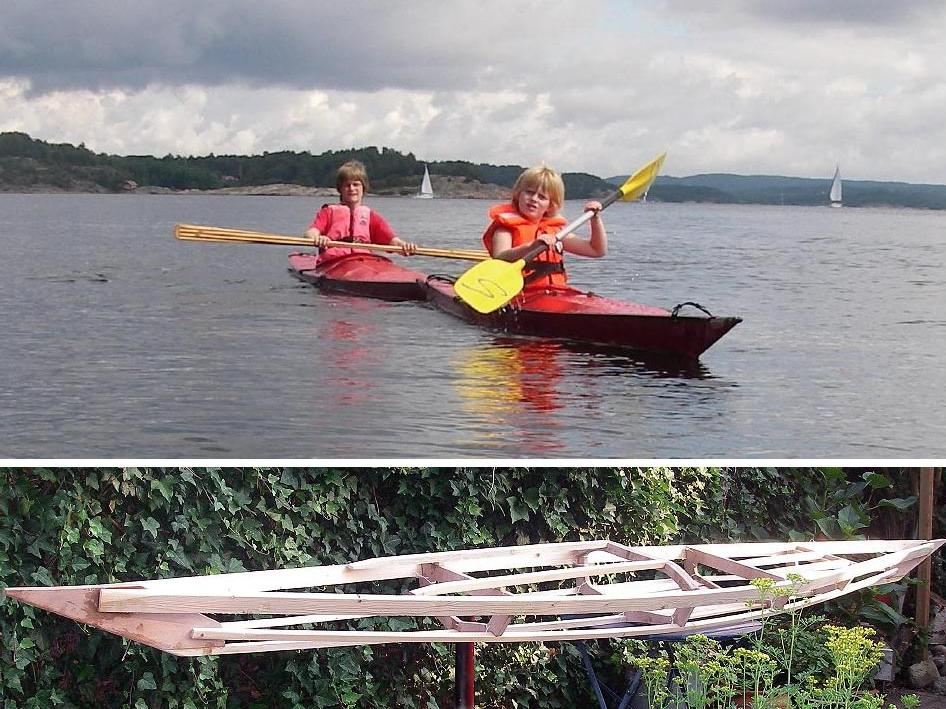

| Sea Flea by Tom Steenbergen (NL) | Menu Last Page Next Page |
|

Tom and Filip Steenbergen, from the Neatherlands, built the Sea Flea that Filip is seen paddling while on holiday in Sweden. Marnix Steenbergen paddles the second boat in the pic . It's a Wave Piercer designed by Dick van Zanten and built using similar non-traditional construction techniques as the Sea Flea . More information on both boats can be found at the QajaqNL site. Use the {Back} key to return.
|
|